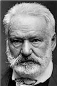

Victor Hugo
Victor Hugo (1802-1885)
“Gülmek için mutlu olmayı beklemeyin, belki gülmeden ölürsünüz.”
Bir kürek mahkûmu Jan Valjean ve polis müfettişi Javert arasında geçen kovalamacanın yanı sıra 19. yüzyıl Paris yaşantısının, toplumsal ayrımların ve halkın içinde bulunduğu durumun, haksız adalet sisteminin, ayaklanmaların anlatıldığı dünyaca ünlü roman Sefille/in yazarıdır.
Sefiller romanı yayımlandığında Fransız yazar ve şair Victor Marie Hugo, yayıncısına kitabının satış durumunu sormak için şöyle kısa bir mektup gönderir:
“?”
Yayıncı, kitabın ilk günler olmasına rağmen, satış rakamlarının oldukça üst düzeye ulaşmasından dolayı duyduğu şaşkınlığı mektubunda şöyle anlatır:
“!”
Babası Napolyon’un generalliğini yapmıştır. Daha sonra babasının Madrid’e vali olarak atanmasıyla çocuk-192 luğunu İspanya’da geçiren Victor Hugo, bu dönemde annesiyle babası arasındaki geçimsizlik nedeniyle babasının yanında kalmıştır. Babası iyi bir eğitim alması için onu İspanyol aristokratların çocuklarının gittiği okula vermişti. Ailesi sonradan soyluluk kazandığı için diğer aristokratların çocukları onu aralarına almamış ve ona kötü davranmışlardı.
İleride yazacağı romanlarında aristokrasiyi yerden yere vurmasının yanı sıra zaman zaman aristokrasiye duyduğu hayranlıkta bunun payının büyük olduğu kitap eleştirmenleri tarafından yazılmıştır.
Sefiller, Notre Dame’ın Kamburu, Cromwell, Hernani, Dok-sanüç ihtilali, idam Mahkûmunun Son Günü, Yüzyılların Efsanesi, Deniz işçileri... Victor Hugo, yaşamı boyunca pek çok roman, tiyatro oyunu ve şiir yazdı.
Şiire yeni başlayan ancak yazdıkları şiirle pek alakalı olmayan bir adam ısrarla Victor Hugo’ya şiirlerini okumaya çalışıyordu. Memnuniyetsizliğini ifadesiyle belli etmesine rağmen adamın “Üstat, şiirlerimi nasıl buluyorsunuz?” sorusuna, Victor Hugo şöyle cevap verdi: “Evet, amacınıza ulaştığınızı söyleyebilirim. Sanıyorum ki hiçbir ahengi olmayan, ölçüsüz, kafiyesiz ve anlamsız bir şeyler yazmak istemişsiniz, tebrikler bunu başarmışsınız!”